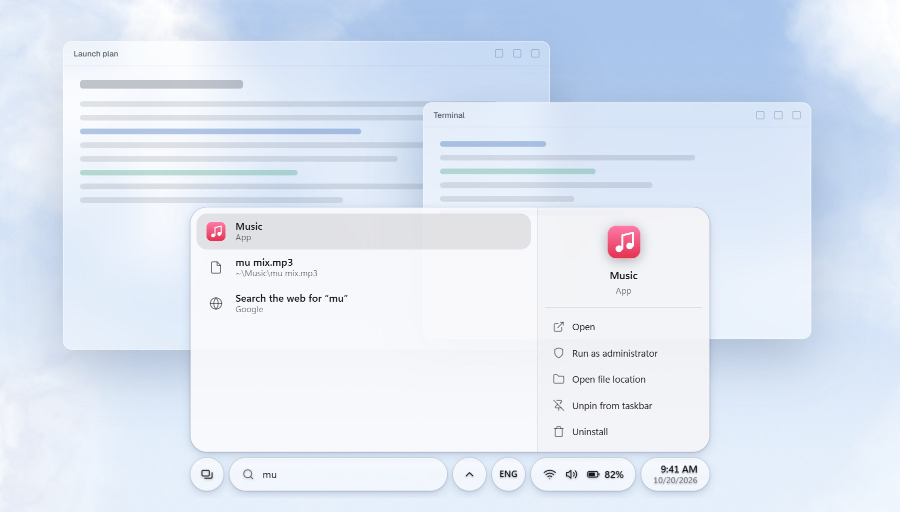
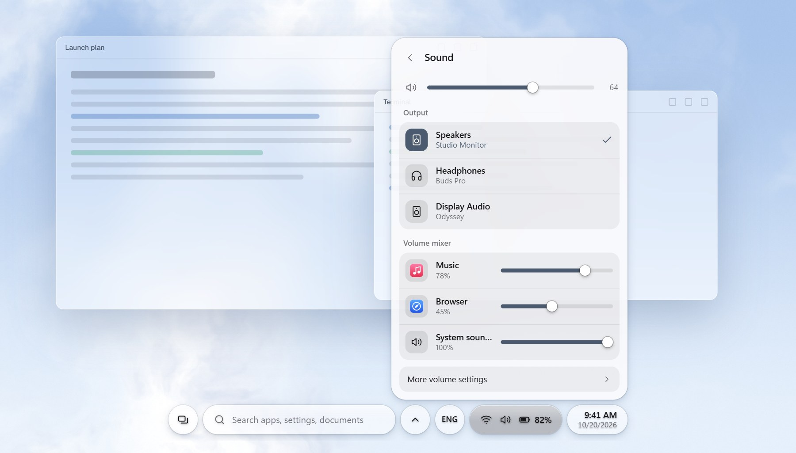
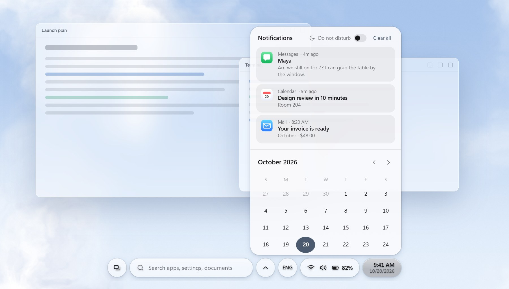
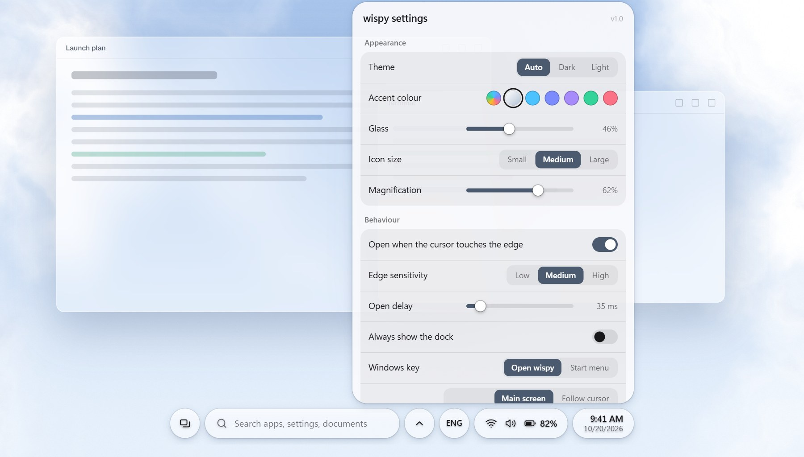
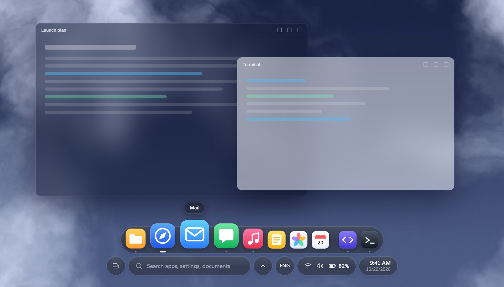

wispy
Your taskbar, as a home bar.
A thin pill that rises to meet your cursor, opens into a dock, and holds search, quick settings and notifications.
Nothing on screen, then a pill, then a dock.
wispy waits at the bottom edge. Move toward it and a thin pill leans your way. Touch the edge and it opens into a dock whose icons grow as you sweep across them.

Everything the taskbar had, and a bit more.





Also in the box: your pinned apps in your Windows order, running dots, drag to reorder, a window picker, right-click menus like the taskbar's, the hidden-icons menu, an input language switcher, Task view and a power menu.
Try it in a minute.
No installer wizard and no admin rights. If you don't like it, quit it and your taskbar is right where you left it.
- 1
Download and unzip
Grab the zip below. It's about 151 MB.
- 2
Double-click
Install wispy.cmdRather look first? Run
wispy\wispy.exestraight from the folder and nothing gets installed. - 3
Move to the bottom edge
wispy hides the Windows taskbar and takes over. Quit from its right-click menu and the taskbar comes back, exactly as it was.
Windows may say the app is unrecognised, because wispy isn't code-signed yet. Choose More info, then Run anyway. Its code is all on GitHub, and the native helper is a few readable C# files.
No accounts, no analytics, no servers. Everything stays on your PC. wispy only touches the internet when you pick a web search, and then it opens your browser.